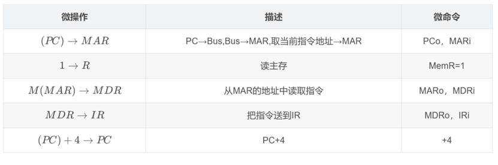
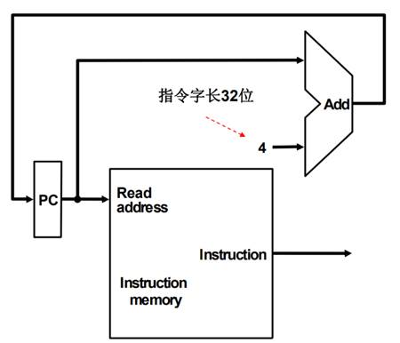
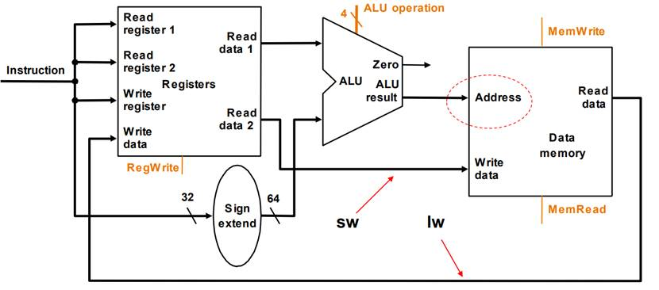
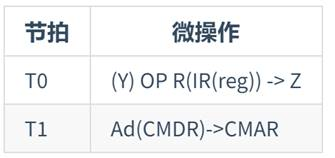

指令的格式
MIPS的操作数
- 32个寄存器
在MIPS中，只能对存放在寄存器中的数据进行
算术操作,其中寄存器$zero的值恒为0，寄存器$at的值被汇编器保留，用于处理大的常数。 - $2^30$ 个存储器字
存储器只能通过数据传输指令访问。MIPS使用
字节编址，所以连续的字地址相差4,。存储器用于保存数据结构、数组和溢出的寄存器。 常见的MIPS汇编语言

在MIPS语言中，寄存器$0-$7映射到寄存器16-23，同理，寄存器$t0-$t7映射到8-15，因此，$s0表示寄存器16，$s1表示寄存器17……其中0号寄存器叫$zero，他的值恒0
MIPS的指令种类
MIPS的指令是32位的，通过将这32位按照不同的格式进行划分，构成了不同的指令格式。
- R类指令
- I类指令
- J类指令
多种指令使得硬件变得复杂，但是保持指令格式的类似性可以有效降低复杂度。例如R型和I型的前三个字段长度相等，并且名称也一样，同时I型格式的第四个字段和R型后三个字段长度之和相等。
R类指令
-
Op: 指令操作码
-
Rs: 第一个源操作数寄存器号，参与运算使用
-
Rt: 第二个源操作数寄存器号，参与运算使用
-
Rd: 目的操作数寄存器号，保存结果使用
-
Shamt: 位偏移量，仅在位移指令使用，在此直接置0
-
Func: 指令函数码，用于选择Op操作中的具体函数
例如加法指令
$Rd=$Rs+$Rt
I型指令

-
Op: 指令操作码
-
Rs: 第一个源操作数寄存器号，参与运算使用
-
Rt: 第二个源操作数寄存器号，参与运算使用
-
16位立即数: 作为数据，参与运算使用 立即数，顾名思义，就是可以立即使用的数，即在指令中就给了具体的数据，而不用先给出寄存器号到寄存器中去找。
J型指令
- Op：指令操作码
26位地址数作为地址，参与寻址使用。 由于在MIPS中J是跳转指令，因此J型指令通常用于指令的跳转使用，后面的数据用于提供跳转地址。
一个合理的MIPS架构的示例

数据类型与常量
数据类型
- MIPS是定长指令系统，所有指令长度均为 32 bit 位。
- 1 byte = 8 bits ; 1 halfword = 2 bytes ; 1 word = 4 bytes 。
- 每个字符，用 1 byte 表示。
- 一个整数，用 1 word（4 bytes）来表示。
- mipsel 和 mips 是完全相同的指令集，区别只在于指令字节序不同。mips指令从左到右解析，而mipsel指令从右到左解析。
常量
- 数字常量 直接键入数字 ，e.g. 4
- 字符常量 单引号括起 ，e.g.’b’
- 字符串常量 双引号括起 ，e.g.”Hello World”
32个通用寄存器
MIPS规定了32个通用寄存器，分别对应为编号0到编号31，每个寄存器还配有一个别名，俗称“助记符”。
| 寄存器号 | 助记符 | 描述原文 | 译文 |
|---|---|---|---|
| 0 | zero | the value 0 | 该寄存器的值永为0 |
| 1 | $at | (assembler temporary) reserved by the assembler | 汇编器的保留变量 |
| 2-3 | $v0, $v1 | (values) from expression evaluation and function results | 表达式求值结果，或函数调用的返回结果 |
| 4-7 | $a0-$a3 | (arguments) First four parameters for subroutine. Not preserved across procedure calls | 子函数调用时的前4个参数 |
| 8-15 | $t0-$t7 | (temporaries) Caller saved if needed. Subroutines can use w/out saving. Not preserved across procedure calls | 临时寄存器，供调用过程中使用 |
| 16-23 | $s0-$s7 | (saved values) - Caller saved. A subroutine using one of these must save original and restore it before exiting. Preserved across procedure calls. | 函数调用时，调用方将当前寄存器状态依次保存起来，子函数退出时，依赖这些值进行寄存器还原 |
| 24-25 | $t8-$t9 | (temporaries) Caller saved if needed. Subroutines can use w/out saving. These are in addition to $t0 - $t7 above. Not preserved across procedure calls. | 临时寄存器，对$t0-$t7寄存器的补充 |
| 26-27 | $k0-$k1 | reserved for use by the interrupt/trap handler | 中断信号的保留寄存器 |
| 28 | $gp | global pointer. Points to the middle of the 64K block of memory in the static data segment. | 全局指针，指向静态数据区，方便全局变量的存取 |
| 29 | $sp | stack pointer. Points to last location on the stack. | 堆栈指针，指向当前的堆顶 |
| 30 | $/s8/$fp | saved value / frame pointer. Preserved across procedure calls | 第9个s寄存器，或帧指针 |
| 31 | $ra | return address | 子函数返回地址 |
MISC
- MIPS的栈由高地址向低地址生长。
- MIPS的PC，每次+4。（这是因为其按照字节寻址）
CPU
基本概念
- 组合单元： 用于处理数据值，组合逻辑实现，例如门或ALU。
- 状态单元： 包含状态，时序逻辑实现，例如寄存器或存储器。
- 寄存器堆：包含一系列寄存器的状态单元，可以通过提供寄存器号进行读写。
一个简单的MIPS单周期CPU实现
转自大作业的WORD,仅供参考
1 MIPS指令架构概览
MIPS的指令是RISC架构，由美国MIPS计算机系统公司开发，具有高效、简洁和强大的特性，也是目前我国自主研发的“龙芯”芯片的架构。MIPS指令集有以下特点
l 简单的Load/Store结构。
l 易于流水线CPU设计。
l 易于编译器开发。
l MIPS指令的寻址方式非常简单，每条指令的操作也相对简洁。
本课程设计使用组合逻辑实现。
MIPS按照字节寻址，因此每次PC+4。
1.1 三种指令格式
常见的MIPS指令体系，有三种指令格式，分别是R型、I型、J型
l R型指令
R型指令通常用于寄存器之间的操作，例如加法、减法、逻辑运算。其基本格式如下
图 1‑1 R型指令结构图
- Op: 指令操作码
- Rs: 第一个源操作数寄存器号，参与运算使用
- Rt: 第二个源操作数寄存器号，参与运算使用
- Rd: 目的操作数寄存器号，保存结果使用
- Shamt: 位偏移量，仅在位移指令使用，在此直接置0
- Func: 指令函数码，用于选择Op操作中的具体函数
例如：add $s1,$s2,$s3 表示 $s1=$s2+$s3
l I型指令
I型指令主要用于立即数操作或者内存读写操作
图 1‑2 I型指令结构图
· Op: 指令操作码
· Rs: 第一个源操作数寄存器号，参与运算使用
· Rt: 第二个源操作数寄存器号，参与运算使用
· 16****位立即数: 作为数据，参与运算使用 立即数，顾名思义，就是可以立即使用的数，即在指令中就给了具体的数据，而不用先给出寄存器号到寄存器中去找。
l J****型指令
J型指令主要用于跳转指令，如无条件跳转或者函数调用等
- Op：指令操作码
26位地址数作为地址，参与寻址使用。 由于在MIPS中J是跳转指令，因此J型指令通常用于指令的跳转使用，后面的数据用于提供跳转地址。
1.2 32个寄存器
本文实现的是一个基于32位的32个寄存器的MIPS指令架构的CPU，其中MIPS规定了32个通用寄存器，分别对应为编号0到编号31，每个寄存器还配有一个别名，俗称“助记符”。
图 1‑3 MIPS寄存器说明
2 指令的选取与指令格式的设计
2.1 总览
综合上文的内容，我们可以将指令格式概括为下表
| 名称 (字段大小) | 7 位 | 5 位 | 5 位 | 3 位 | 5 位 | 7 位 | 备注 |
|---|---|---|---|---|---|---|---|
| R 型 | funct7 | rs2 | rs1 | funct3 | rd | opcode | 算术指令格式 |
| I 型 | immediate[11:0] | rs1 | funct3 | rd | opcode | 加载和立即数算术指令格式 | |
| S 型 | immed[11:5] | rs2 | rs1 | funct3 | immed[4:0] | opcode | 存储指令格式 |
| SB 型 | immed[12,10:5] | rs2 | rs1 | funct3 | immed[4:1,11] | opcode | 条件分支指令格式 |
| UJ 型 | immediate[20,10:1,11,19:12] | rd | opcode | 无条件跳转指令格式 | |||
| U 型 | immediate[31:12] | rd | opcode | 上立即数指令格式 |
我们选择取字****(lw)、存字(sw)、相等则分支(beq)，以及算数逻辑指令:加法(add)、减法(sub)、与(AND)、或(OR)、小于则置位(set on Less than)****。
2.2 指令格式设计
2.2.1 LW指令
LW 指令的汇编格式为 lw rt， offset(rs)，这将 offset 进行位拓展后与 rs 寄存器中数据相加获得访存地址，然后从该地址取出数据并存到 rt 寄存器中。
图 2‑1 LW指令编码
2.2.2 SW指令
SW 指令的汇编格式为 sw rt， offset(rs)，这将 rt 寄存器中的数据存到 offset 与 rs 寄存器中数据计算后得到的地址位置处。
图 2‑2 SW指令
2.2.3 算数逻辑指令总览
根据指令类型的不同，我们需要使ALU执行上述5中算数逻辑指令中的一种，对于取字和存储字指令，ALU用加法计算来实现计算地址的功能。对于R型指令，根据低六位的funct字段来确定ALU执行5种操作的哪一种（AND | OR | SUB |set on Less than）。对相等则分支指令，我们让ALU执行减法操作。
使用一个小的控制单元就可以实现生成4位的ALU控制信号，输入是指令的funct字段和2位ALUop字段，ALUop指明了操作是加法(00)、beq的减法（01）还是由指令的funct字段来决定(10)，ALU单元输出4位信号。这种多级译码的方法可以减小主控单元规模，提高控制单元的速度，这种优化我认为是十分必要的。
| ALU控制信号 | 功能 | ALU控制信号 | 功能 |
|---|---|---|---|
| 0000 | 与 | 0110 | 减 |
| 0001 | 或 | 0111 | 小于则置位 |
| 0010 | 加 | 1100 | 或非 |
2.2.4 ADD指令
ADD 指令的汇编格式为 add rd， rs， rt，这实现了 32 位整数加的操作，加数与被加数分别置于 rs 和 rd 寄存器中，最后由 ALU 运算器计算出结果并存到 rd 寄存器中。
图 2‑3 add指令编码
2.2.5 Sub指令
SUB 指令的汇编格式为sub rd， rs， rt，这实现了 32 位整数减的操作，被减数与减数分别置于 rs 和 rd 寄存器中，最后由 ALU 运算器计算出结果并存到 rd 寄存器中.
图 2‑4 sub指令编码
2.2.6 And指令
图 2‑5 and指令编码
2.2.7 Or指令
图 2‑6 Or指令编码
2.2.8 Beq指令
图 2‑7 beq指令编码
beq 指令用于比较两个寄存器的值是否相等，如果相等则进行分支操作。指令中的立即数字段为 16 位有符号数，表示分支目标地址与顺序执行地址 PC+4 之间的字偏移，这个偏移量可以是正数也可以是负数（即可以向前或向后跳转）。由于指令长度为 4 字节，因此需要将 16 位立即数符号扩展成 32 位，并左移两位生成 32 位字节偏移量，然后再加上顺序执行地址 PC+4 才能得到分支目标地址。为了避免资源冲突，需要设置一个专门的加法器。当比较条件满足时，用分支目标地址更新 PC 的内容，即进行分支跳转；否则，将 PC 的值更新为 PC+4，程序顺序执行。为此，PC 的输入端还需要增加一个多路选择器，用于选择顺序执行或跳转执行。
2.3 总结
这些指令都需要经过ALU，所以我们需要给出ALU的控制原理，在2.2.3节已经给出ALU的控制信号表，我们结合刚才编排的所有指令给出总结。
整体指令格式如下
图 2‑8 指令格式
对应的ALU控制信号表如下
图 2‑9 ALU控制信号
根据信号绘制出真值表，该真值表的输入是ALUop字段和funct字段，在此我们只列出ALU控制有效的项，也包括一些无关项，例如ALUop不使用11，因此真值表包含1X和X1项，而不是10和01项。
图 2‑10 ALU控制信号的真值表
3 微操作与数据通路
实现不同指令的多数工作都是相同的，与指令类型无关：
- 取指：将 PC 送往 MEM
- 取数：根据指令字中的地址域读寄存器
执行操作各个指令不同，但同类指令非常类似：
-
算术逻辑指令
-
- R 类 ALU 指令：add x1, x2, x3
- I 类 ALU 指令：addi x3, x3, 4
不同类型指令也有相同之处，如都要使用 ALU：
- 访存指令使用 ALU 计算地址：lw x1, 100(x2)
- 算术逻辑指令使用 ALU 完成计算：add x1, x2, x3
- 分支指令使用 ALU 进行条件比较：beq x1, x2, name
其后，各个指令的工作就不同了：
- 访存指令对存储器进行读写：lw x1, 100(x2)
- 算术逻辑指令将 ALU 结果写回寄存器：add x1, x2, x3
- 分支指令将基于比较结果修改下一条指令的地址：beq x1, x2, name
微操作就是将数据流用形式化的语言描述出来，本文使用更加具体的数据流，展示在设计的MIPS芯片中具体的数据流动，并利用语言来展示微操作。
3.1 数据流设计
l 寄存器计算指令的数据流，这种情况对应于源操作数和目的操作数都在寄存器中，例如add x1, x2, x3; x2+x3->x1这个命令的数据流如下：
图 3‑1 寄存器计算指令的数据流图
如图所示，首先从寄存器堆中选出ra和rb,然后通过一个控制信号来将多选器muxb选择为非立即数，然后将ra和rb送入ALU的输入端，并将结果rc送回寄存器堆。
l 立即数计算指令的数据流：有一个源寄存器在立即数寄存器中，例如addi x3,x3,4；x3 = x3 + 4
图 3‑2 立即数指令计算数据流图
如图所示，这次我们通过多选器将立即数送入InB，然后流程与图3-1一样。
综合上面的结论，我们可以绘制出如下的CPU指令数据通路总图
图 3‑3 指令数据通路总图
l 寄存器堆的读写操作
寄存器文件在一个周期中有两个读和一个写操作。
n 在一个周期内，某个REG可以同时完成读写操作，但读出的是上一个周期写入的值
n 寄存器文件不能同时进行读和写操作。我们选择在前半周期进行读操作，后半周期进行写操作。
l 多路选择器
通过多路选择器来进行选择，这个由控制信号来决定，控制信号会在后文中详细进行设计与阐释。
由此我们的设计流程是先进行数据通路的设计，再进行控制部件的设计。
我们将指令执行周期分为取指、译码、执行、访存、写回五个阶段。
3.2 取指

图 3‑4 取指对应的微操作

图 3‑5 取指对应的数据通路图
如图所示，将PC的地址读取，然后访问对应的指令，并将指令输出，然后将PC和立即数送入ALU进行加法运算，也就形成了下一条指令的地址。
3.3 译码
译码是将当前的指令进行解释，数据流图如下
图 3‑6 译码阶段数据流图
如图，我们以R-type指令为例，R-type指令通常都操作三个寄存器数或立即数，首先将rs2、rs1的字段送入寄存器堆的“读寄存器1”和“读寄存器2”输入，然后将rd字段送入“写寄存器”字段，然后将opcode操作码送入control进行控制，表明rs1 op rs2 -> rd
3.4 执行
执行过程中由于指令不同而不同，我们将分开阐述
3.4.1 R-type的数据通路
R-type在本设计中是算数逻辑运算指令，因此我们根据3.3中的译码，设置好需要读取的寄存器文件和执行完毕需要写入的寄存器文件，然后并设置控制信号将ALU设置为特定的操作模式，然后执行下面的操作
图 3‑7 R-type指令的数据通路
其形式化语言就是(Y) op R(IR(16 20)) -> Z，将寄存器的rs2与rs1读取，送入到ALU的输入，然后ALU根据控制信号来选择操作模式，然后将输出放入到ALU result中，并通过RegWrite写入寄存器。这里值得注意的是，ALU由Zero端，可以用来进行beq指令的实现。
这里涉及到寄存器堆的操作
l 读：给出寄存器编号，寄存器的值自动输出到端口。
l 写：需要寄存器编号和控制信号RegWwrite，时钟边沿触发。
l 在一个周期内，REG可以同时完成读写操作，但是读出的是上一个周期写入的值（读后写）
由于我们没有采用流水线架构，不会遇到冒险的情况，因此不需要考虑用气泡来阻塞流水等复杂的操作，只需要忠实地搭建我们的数据通路即可。
3.4.2 访存指令-ld
访存指令的编码如下图
图 3‑8 访存指令的编码
其数据通路如下：
图 3‑9 ld指令的数据通路
如图，rs寄存器中存的是基址，rt是ld目的寄存器
指令获取和解码：
· 从指令存储器中获取lw指令，并解码获取操作数。lw指令的格式是：lw rt, imm16(rs)，其中rt是目标寄存器，rs是基址寄存器，imm16是16位偏移量。
寄存器读操作：
· 将rs字段送入寄存器堆的R1#端口，从寄存器堆中读取基址寄存器rs的值。
立即数扩展：
· 将16位立即数imm16通过符号扩展单元扩展为32位。这是因为MIPS处理器内部操作是基于32位的，需要将16位偏移量扩展为32位才能进行加法运算。
地址计算：
· 扩展后的32位立即数与从寄存器堆读取到的rs寄存器值通过ALU进行加法操作，计算出最终的访存地址。ALU的操作符AluOp应设置为加法操作。
访存操作：
· 使用计算出的访存地址从数据存储器中读取数据。数据存储器的写使能控制信号WE应设置为0，以确保进行的是读操作。
写回寄存器：
· 将从数据存储器中读取到的数据送入寄存器堆的写数据端口WD，并将rt字段送入寄存器堆的写寄存器编号端W#。寄存器堆的写使能控制信号RegWrite应设置为1，以允许数据写回寄存器堆。
例如：lw x1, offset(x2); M(x2+offset) -> x1
注：本指令中由Sign Extend对指令进行扩展。
3.4.3 访存指令-sw

图 3‑10 访存指令sw的格式

图 3‑11 访存指令sw的数据通路
寄存器读取
· 将rs1字段送入寄存器堆的R1#端口，从寄存器堆中读取基址寄存器rs1的值。
· 将rs2字段送入寄存器堆的R2#端口，从寄存器堆中读取源寄存器rs2的值。
3. 立即数扩展
· 由于设计的是32位的MIPS-CPU，故将其扩展为32位。
4. 地址计算
· 将符号扩展后的32位立即数与基址寄存器rs1的值送入ALU。
· ALU执行加法操作，计算得到最终的访存地址。
5. 访存操作
· 使用计算得到的地址，将源寄存器rs2中的数据写入数据存储器的该地址。
· 将写数据送入数据存储器的写数据端口。
6. 控制信号设置
· MemWrite（数据存储器写使能控制信号）应设置为1，以允许写入数据到数据存储器。
· RegWrite应设置为0，因为此指令不需要写回寄存器。
· AluOp应设置为加法操作。
· 数据通路功能部件
· 指令存储器: 存储并提供指令。
· 寄存器堆: 存储寄存器的值，进行读写操作。
· 符号扩展单元: 将12位立即数扩展为32位。
· ALU: 执行加法操作，计算最终的访存地址。
· 数据存储器: 存储并提供数据，执行读写操作。
3.4.4 数据通路综合
图 3‑12综合数据通路
-
指令获取与PC****更新
-
PC（程序计数器）提供当前指令的地址。
-
指令存储器从该地址读取指令并提供给后续处理单元。
-
PC****更新：PC通常在每次指令获取后增加4，以指向下一条指令。
-
2. 指令解码和寄存器读取
-
指令解码：将指令分解为不同的字段，例如操作码（opcode）、寄存器源地址（rs1、rs2）、目标寄存器地址（rd）、立即数（immediate）等。
-
寄存器读取：从寄存器堆中读取源寄存器（rs1、rs2）的值，并将它们送入ALU或数据存储器。
-
3. 数据通路功能部件
寄存器堆
- 读寄存器1****和2：根据指令中的rs1和rs2字段，从寄存器堆中读取数据。
- 写寄存器：根据指令中的rd字段，将计算或访存结果写回寄存器堆。
符号扩展单元
-
立即数扩展：对于I型和S型指令，将16位的立即数符号扩展为32位，供后续运算使用。
-
4. ALU****操作
-
ALUSrc****选择：通过多路复用器（MUX）选择ALU的第二个操作数，选择rs2的值或扩展后的立即数。
-
ALU****操作：根据操作码和功能码，执行加法、减法、逻辑运算等操作。
-
ALU****结果：计算结果送至数据存储器地址端口或直接写回寄存器堆。
-
5. 数据存储器访问（仅对访存指令）
-
地址计算：ALU计算出最终的访存地址。
-
数据写入：对S型指令，将数据从寄存器写入到计算出的内存地址。
-
数据读取：对I型访存指令（如lw），从计算出的内存地址读取数据并送入寄存器堆。
-
6. 控制信号
-
RegWrite：写寄存器使能信号，控制是否写回寄存器堆（R型和I型指令中为1）
-
ALUSrc：ALU源操作数选择信号，用于选择ALU的第二个操作数是寄存器的值（rs2）还是扩展后的立即数。对于R型指令，选择寄存器值；对于I型和S型指令，选择立即数。
-
MemRead：内存读使能信号，用于控制是否从内存读取数据。对于lw指令，MemRead为1。
-
MemWrite：内存写使能信号，用于控制是否向内存写入数据。对于sw指令，MemWrite为1。
-
MemtoReg：选择寄存器写回数据的信号。对于lw指令，选择从内存读取的数据；对于R型指令，选择ALU的计算结果。
此外，为了实现beq分支指令，我们需要加一个mux来进行选择，得到总的数据通路图
图 3‑13 数据通路总图
得到的微操作如下：
图 3‑14 微操作表
4 节拍的划分
整体设计的节拍如下图所示
图 4‑1 节拍的划分
4.1 取指阶段
取指阶段各指令的操作是相同的，因此我们可以统一设计，操作如下表
图表 1 取指阶段的节拍划分
4.2 取数阶段
图表 2 取数阶段的节拍划分
4.3 R型指令执行阶段
在本CPU中，R型都是操作三个寄存器的算数逻辑运算，因此可以用同样的节拍划分来概括。

图表 3 R-type节拍划分
4.4 访存指令
4.4.1 ld指令
图表 4 ld指令节拍划分
4.4.2 sw指令
图表 5 sw指令划分
5 控制信号
ALU的控制信号在第2节已经详细阐述，这里不赘述，我们将重点放在控制信号的生成上
图 5‑1 控制信号
根据控制信号，我们可以绘制出ALU的控制选择电路，由浅色（蓝色）的线来表示。
图表 6 ALU控制线路
5.1 对数据通路的控制
根据设计的指令，我们可以得到每一个指令对应的信号
图表 7 指令对应的控制信号
如图，按指令操作码设置的控制信号。表的第一行对应于R型指令(add、sub、AND、OR 和 slt):源寄存器字段都为rs和n，目的寄存器字段为rd，这决定了ALUSrc和RegDst信号如何设置;并且，R型指令写寄存器(RegWrite=1)，但是不读写数据存储器。当Branch 控制信号为0时PC无条件地由PC+4取代;反之，如果ALU的零输出也为高，则PC由分支目标地址取代。当R型指令的 ALUOp为 10 时，ALU 的控制信号应由 funct 字段生成。本表的第二行和第三行给出了1w、sw指令的控制信号设置:ALUSr和ALUOp被设为进行地址计算;MemRead 和MemWrite 被设为进行存储器访问;最后，RegDst和 RegWrite 被设为在装载指令中将结果存人寄存器rt中。分支指令与R型指令相似，因为它将寄存器rs和送人 ALU:分支指令的 ALUOp字段被设为进行减法(ALUOp=01)，以进行等值的测试。注意，RegWrite=0时MemtoReg的设置无关紧要–因为寄存器没有被写入，寄存器写端口的数据值不被使用，所以最后两行MemtoReg 的值由于不被关心而用X取代。RegWrite=0时，RegDst 的值也可用X取代。
5.2 各种指令的执行步骤
我们站在控制的角度，需要重新进一步细化指令的设计。
l R型指令
✓第一步：取指和PC＋4
✓第二步：读两个源操作数寄存器x2和x3
✓第三步：ALU操作
✓第四步：结果写回目的寄存器x1
l Lw指令
p第一步：取指和PC＋4
p第二步：读寄存器x2
p第三步：ALU操作完成x2与符号扩展后的offset加
p第四步：ALU的结果作为访存地址，送往数据MEM
p第五步：内存中的数据送往x1
l Beq指令
p第一步：取指和PC＋4
p第二步：读寄存器x1，x2
p第三步：ALU将x1和x2相减；PC+4与被左 移1位并进行符号扩展后的offset相加，作 为分支目标地址
p第四步：ALU的Zero确定应送往PC的值
5.3 控制单元的实现
在有了对指令的详细操作之后，我们需要一个映射关系，输入是6位操作码 ，输出是控制信号，这样，我们可以基于操作码的二进制编码来为每一个输出建立一个真值表，根据我们前面构建的信息，我们可以将控制单元包括所有的输出的逻辑综合起来，描述成如下图的一张真值表。
图表 8a 控制功能的真值表

图表 9b 控制功能的真值表
如图，表a部分为输入，其包括操作码(对应于指令的31:26 位的 Op[5:0])的4种组合。表b部分为4种组合的输出。因此，RegWrite 对于两种不同的输人组合是有效的。如果只考虑这张表中的4个操作码，则可以用输入部分的无关项简化真值表。例如，可以由表达式 确定是否为R型指令，因为这已经足够将R型指令与 1w、sw和 beq指令区分开。之所以不用这种简化，是因为在 MIPS指令集的完整实现中会用到其他操作码
6 CPU结构框图
图 6‑1 CPU结构框图
图 6‑2本文设计的MIPS-CPU总览
1.控制单元（Control Unit）：控制单元是 CPU 的核心部分，负责控制整个计算机系统的运 行。它从内存中读取指令，解码指令，调度执行，以确保指令按照正确的顺序和时间被 执行。 2. 算术逻辑单元（Arithmetic Logic Unit, ALU）： ALU 执行各种算术运算（如加法、减法、 乘法、除法）和逻辑运算（如与、或、非）的操作。它从寄存器中获取数据进行计算， 并将结果存回寄存器。 3. 寄存器（Registers**）：**寄存器是 CPU 内部的高速存储器件，用于临时存储指令、数据和 地址。不同类型的寄存器包括： a) 程序计数器（Program Counter, PC）：存储下一条要执行的指令的地址。 b) 指令寄存器（Instruction Register, IR）：存储当前正在执行的指令。 c) 累加器（Accumulator）：用于存储算术运算的结果。 d) 数据寄存器（Data Registers）：存储计算过程中的数据。 e) 地址寄存器（Address Register）：存储内存地址。
MIPS规定了32个通用寄存器，分别对应为编号0到编号31，每个寄存器还配有一个别名，俗称“助记符”。
- 缓存（Cache）：缓存是位于 CPU 和主内存之间的高速存储器，在存储器访问频繁的数
据和指令，以提高数据访问速度。在本CPU中并没有实现
- 数据总线（Data Bus）和地址总线（Address Bus）：数据总线用于传输数据，地址总线用
于传输地址。它们是 CPU 和其他计算机组件之间进行通信的通道。
- 计时器（Timer）：计时器用于控制 CPU 内部的时钟频率和执行指令的速度，以确保指
令按照正确的顺序和时间被执行。
7 总结与分析
我们其实通过了一个大致的自顶向下的思路逐步设计了一个单周期的MIPS-CPU，我们首先明确了MIPS常见的指令格式，然后根据MIPS架构模式，构建了基本的数据通路以及寄存器规范，然后我们挑选基本的指令进行设计，整体经过了从数据通路设计到控制部件设计的过程。
我们实现的是一个简单的单周期MIPS处理器，单周期就意味着指令周期=1机器周期=1时钟周期,并且采用边缘触发方式，即所有指令在时钟的一个边开始执行，在下一个边结束
这种单周期CPU实际工作效率是特别低的，因为其 。
我们可以进行一个简单的分析，设程序中load有24％，store有12％，R-type有44％，beq有18 ％，jump有2％。假设load, store,R,beq,jump指令的时间分别是 8,7,6,5,2ns（如下表）。如果时钟周期固定，单周期的时钟为 8ns；如果时钟周期不定长，单周期的时钟可以是2ns～8ns。试 比较时钟定长单周期实现和不定长单周期实现的性能。
则如果我们使用变长周期，我们有
我们发现，变长周期实现比定长单周期实现快 倍。
此外，我们还可以使用流水线技术，但是流水线技术涉及到逻辑冒险和气泡阻塞流水，以及通过旁路来加速的更深入的知识，我们并没有在《计算机组成原理》中深入探讨，因此只能停留在“可以通过这么优化”的理论层面。不过，基于以上技术的一个单周期MIPS处理器已经足矣说明这些指令的处理流程。
8 参考资料
[1] MIPS32™ Architecture For Programmers Volume II, Revision 1.00
[2]计算机组成与设计 硬件/软件接口 原书第5版
[3]计算机组成原理 唐硕飞 第三版
[3]计算机组成原理 谭志虎